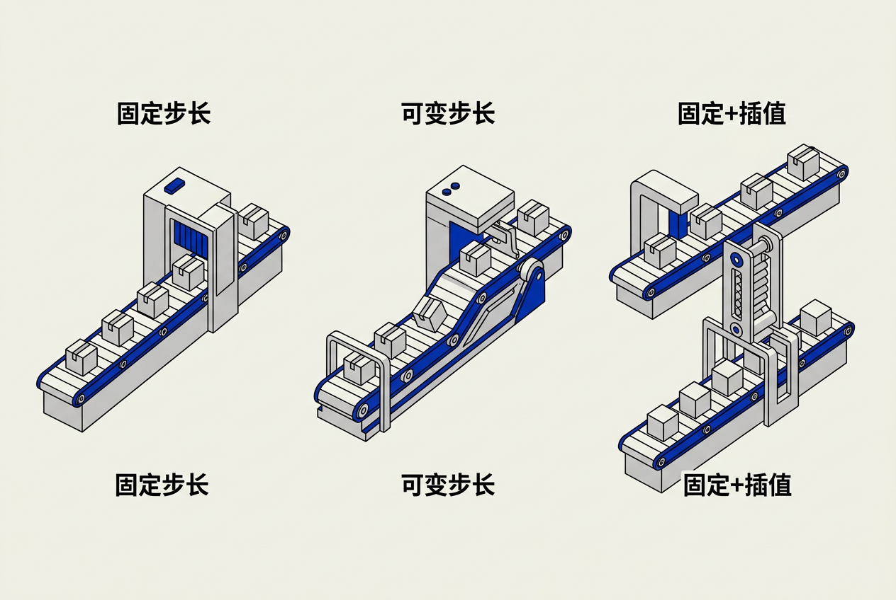

第8章：游戏循环与实时模拟 — 零基础讲义
讲义说明
本讲义基于 Jason Gregory 所著《Game Engine Architecture Volume I》第4版第8章（The Game Loop and Real-Time Simulation, p.488-520），逐节翻译推导。
细到 x.x.x.x 四级章节，零基础读者不必看原书也能完全理解。
本版插画由 ImageGen + Guizang 材质插画标准流程生成。
学习目标
- 理解游戏循环是"输入→更新→渲染"的无限循环
- 掌握固定步长、可变步长、固定+插值三种架构的取舍
- 深入理解 accumulator 的工作原理
- 理解 deltaTime 的正确用法和常见陷阱
- 了解 V-Sync、画面撕裂、自适应同步的物理原理
- 理解多线程游戏循环和作业系统的设计模式
- 掌握双缓冲和作业依赖两种数据同步策略

8.1 游戏循环架构
8.1.1 什么是游戏循环？
所有游戏引擎的核心都是一个无限循环。从1972年的Pong到《荒野大镖客2》，骨架完全一样：
while (gameIsRunning) {
ProcessInput(); // 步骤1：读取玩家输入
UpdateWorld(); // 步骤2：更新游戏世界状态
Render(); // 步骤3：渲染一帧画面
}生活类比：你是一个忙碌的厨师。无限循环中的三个步骤：看订单（处理输入）→ 翻炒锅里的菜（更新世界）→ 端到顾客面前（渲染）。每秒重复60次，顾客就感觉菜是连续端上来的。如果某一次多花了时间（锅糊了要重做），顾客就要多等——这"多等的一下"就是"掉帧"。
8.1.1.1 三个步骤的职责
| 步骤 | 具体做什么 | 时间预算(60fps) |
|---|---|---|
| ProcessInput | 读键盘/手柄/鼠标/触屏状态→转换成游戏动作（跳跃、射击、移动） | ~0.5ms |
| UpdateWorld | 物理模拟、AI决策、动画更新、游戏逻辑、网络消息处理 | ~10ms |
| Render | 收集可见物体→GPU绘制一帧→输出到屏幕 | ~6ms |
8.1.1.2 这个循环的三种变体
游戏循环之所以需要"变体"，是因为UpdateWorld 和 Render 的速度不一定同步。UpdateWorld（CPU）花多少时间取决于场景中有多少物、AI参与多少决策。Render（GPU）花多少时间取决于画面有多复杂——三角形数、光线数量、后处理效果。两个芯片负载独立变化。好的循环架构必须把这两个速度解耦。
8.1.2 固定步长架构
物理/逻辑更新以固定频率（如60次/秒）运行，渲染尽可能快。这是最早的经典方案。
8.1.2.1 核心代码
const float FIXED_DT = 1.0f / 60.0f; // 每次物理更新 = 16.67ms
float accumulator = 0.0f; // 时间"储存罐"
while (gameIsRunning) {
float frameTime = GetActualFrameTime(); // 这一帧GPU实际花了多久
accumulator += frameTime; // 把时间倒进罐子
// 关键环节：罐子里积累到至少一次物理步长时——执行一次物理更新
while (accumulator >= FIXED_DT) {
UpdatePhysics(FIXED_DT); // 物理始终以固定步长运行
UpdateAI(FIXED_DT);
accumulator -= FIXED_DT; // 消耗一个固定步长
}
// 渲染尽可能快——不受物理频率约束
Render();
}8.1.2.2 accumulator 三帧示例
| 帧 | 渲染耗时 | accumulator累积 | 物理更新次数 | 剩余 |
|---|---|---|---|---|
| 帧1 | 10ms(GPU闲) | 10ms → <16.67 | 0次 | 10ms留着下帧 |
| 帧2 | 16ms | 10+16=26ms → ≥16.67执行1次 | 1次 | 9.33ms留着下帧 |
| 帧3 | 45ms(爆炸特效) | 9.33+45=54.33ms → ≥16.67重复 | 3次 | 4.33ms留着下帧 |
生活类比：accumulator 是一个存钱罐。每次渲染结束后，把"时间"这个硬币投进罐子。当罐子里的硬币够买一个"物理更新糖果"（16.67ms）时，就买一次。有些帧买0次（罐子里的钱不够），有些帧买3次（罐子攒了很多钱）。物理糖果永远以固定的价格出售——保证了确定性。
8.1.2.3 优点与陷阱
优点：物理确定性。不管帧率是60还是30，物理行为完全一样——这对回放系统和网络同步至关重要。（服务器发送"第X次物理更新时位置为Y"——客户端用同样的固定步长回放，结果与服务器一致。）
陷阱——螺旋死亡（Spiral of Death）：如果渲染一帧花了300ms（如场景突然变得非常复杂，或后台有其他应用在跑）。accumulator累积到300ms = 需要执行 18 次物理更新！每次物理更新又要花时间，做完 18 次物理后帧又花了更长时间→ accumulator 又累积了更多时间→需要更多次物理→越来越跟不上→彻底崩溃。
解决方法：限制每帧最大物理更新次数（如最多5次）。超过5次的 accumulator 剩余直接丢弃——接受"物理落后了"的现实。
物理引擎使用数值积分。如果每帧时间步长不同，模拟结果就不同——60fps正常，30fps可能穿透墙体。而且对于网络游戏，服务器和客户端的帧率不同会导致双方看到的物理行为完全不同→无法同步。固定步长是"同一本物理书"——服务器和客户端读的是同一页。
8.1.3 可变步长架构
8.1.3.1 核心代码
while (gameIsRunning) {
float dt = GetActualFrameTime(); // 这一帧实际花了多久
ProcessInput();
UpdateWorld(dt); // 所有系统直接用dt——简单粗暴
Render();
}优点：实现极简。缺点：物理不稳定——15fps时角色在66ms内可能穿过墙体、物理碰撞完全不可预测。仅适合没有物理或不需要确定性的简单游戏。
8.1.4 固定步长 + 渲染插值（最优方案）
8.1.4.1 为什么需要插值？
物理以 60Hz 更新，但显示器以 144Hz 刷新。显示器在第 N 次物理更新和第 N+1 次之间刷新了一个画面——此时物体在哪个位置？答案是物理更新之间——用插值算出来。
8.1.4.2 核心代码
const float FIXED_DT = 1.0f / 60.0f;
float accumulator = 0.0f;
float alpha = 0.0f; // 插值因子：[0, 1)
while (gameIsRunning) {
accumulator += GetActualFrameTime();
alpha = accumulator / FIXED_DT; // 本次物理更新完成的比例
while (accumulator >= FIXED_DT) {
// 先保存"旧状态"——这很重要
SavePreviousState();
UpdatePhysics(FIXED_DT);
accumulator -= FIXED_DT;
}
// 渲染时：显示位置 = Lerp(上次物理帧的位置, 当前物理帧的位置, alpha)
// alpha=0.3 → 显示的位置在"上次"和"当前"之间30%的位置
RenderWithInterpolation(alpha);
}Unreal 和 Unity 都默认使用这种方案。物理确定性 + 画面平滑——兼得。
8.2 帧率与时间管理
8.2.1 deltaTime 的正确用法
8.2.1.1 核心公式
// 黄金法则：所有"随时间变化的值"都必须乘以 deltaTime
// ❌ 错误：速度与帧率耦合
// 60fps → 每秒移动 60×1 = 60 单位
// 30fps → 每秒移动 30×1 = 30 单位 ← 角色变慢了！
position.x += speed;
// ✅ 正确：速度与帧率无关
// 60fps: 1.0×16.7ms = 每帧0.0167 → 每秒1.0
// 30fps: 1.0×33.3ms = 每帧0.0333 → 每秒1.0
position.x += speed * deltaTime;
// 这个法则对所有系统都适用：
health += regenRate * deltaTime; // 生命恢复
cooldown -= deltaTime; // 冷却递减
animationTime += deltaTime; // 动画进度8.2.1.2 常见陷阱
陷阱1：忘记乘 dt——最常见的"隐性 bug"。开发者在 60fps 电脑上测试一切正常，发到 30fps 的 Switch 或手机后角色移动变慢——排查一整天。
陷阱2：用帧数代替时间——"冷却 60 帧"（60fps下=1秒, 30fps下=2秒）——不应该用帧计数来表示时间。
陷阱3：物理系统已经内部处理了 dt——你在调用 physics.Update() 时传入了 dt，物理引擎自己会处理。不需要在外面再乘一次 dt——会双重处理。
8.2.2 画面撕裂
8.2.2.1 工作原理
生活类比：显示器不是一瞬间显示整个画面的——它一行一行从上往下扫描（像打印机的打印头）。60Hz 显示器完成一次从上到下的扫描需要 16.67ms。
// 显示器正在刷新第540行（屏幕一半的位置）的时刻：
// 此时GPU完成了新一帧的渲染→交换帧缓冲（swap buffers）
//
// 此时此刻屏幕上的画面：
// 第1-540行：旧帧（还没被刷新到新数据）
// 第541-1080行：新帧（刚被交换进来的数据）
//
// 新旧两帧在同一画面，"撕裂线"正好在中间
// 看起来像画面被一把钝刀切了一大块8.2.2.2 解决方案对比
| 方案 | 撕裂 | 延迟增加 | 帧率上限 | 需要硬件 |
|---|---|---|---|---|
| 无 V-Sync | ⚠️有 | 0ms | 无限制 | 任何 |
| 标准 V-Sync | ✅无 | +16-33ms | 60Hz | 任何 |
| G-Sync (NVIDIA) | ✅无 | ~1ms | 可变 | G-Sync显示器 |
| FreeSync (AMD) | ✅无 | ~1ms | 可变 | FreeSync显示器 |
| Fast Sync (NVIDIA) | ✅无 | ~8ms | 无限制 | 任何 |
8.2.3 自适应帧率
当场景突然变得复杂（爆炸/大量敌人/粒子）→渲染时间超过 16.7ms→帧率从 60 掉到 45。
引擎检测到帧率下降，在下一帧自动降低画质——动态降低渲染分辨率、减少阴影质量、缩短视距、使用更低 LOD。这些调整在玩家察觉不到的一瞬间完成，让帧率恢复到 60。
所有现代3A游戏都支持。
8.3 多处理器游戏循环
8.3.1 典型线程布局
// 现代8核游戏引擎的线程分工
// ┌────────────────────────────────────┐
// │ 主线程 (Core 1): 输入+AI+逻辑 │ ~8ms/帧
// │ ───────────────────────────────── │
// │ 渲染线程 (Core 2): 收集命令→GPU │ ~5ms/帧（与主线程并行）
// │ ───────────────────────────────── │
// │ 物理线程 (Core 3): 碰撞+刚体模拟 │ ~3ms/帧
// │ ───────────────────────────────── │
// │ 音频线程 (Core 4): 混合+DSP │ ~2ms/帧（必须实时）
// │ ───────────────────────────────── │
// │ 作业线程池 (Core 5-8): 碎片任务 │ 动态分配
// └────────────────────────────────────┘8.3.2 作业系统（Job System）
8.3.2.1 为什么需要作业系统？
手工给8个线分配工作极度复杂。每帧各系统负载都不一样——有时物理轻但AI重，有时渲染轻但网络重。静态分配不能充分利用所有核心。
8.3.2.2 工作原理
// 每帧开始：主线程拆解工作→构建任务图→投入作业队列
//
// 作业队列（所有核心都可以取）：
// [Job1: 更新角色A骨骼] → [Job5: 角色A蒙皮] ← Job5依赖Job1
// [Job2: 更新角色B骨骼] → [Job6: 角色B蒙皮] ← Job6依赖Job2
// [Job3: 碰撞分区1检测] ← 无依赖
// [Job4: 粒子更新] ← 无依赖
//
// 核心1取Job1→完成后Job5被"解锁"→进入队列
// 核心2取Job2→完成后Job6被"解锁"
// 核心3取Job3→完成
// 核心4取Job4→完成
// 核心1取Job5→完成8.3.3 数据同步策略
8.3.3.1 双缓冲模式
主逻辑线程写缓冲A，渲染线程读缓冲B。每帧结束后"翻页"——交换A和B的指针。渲染线程始终读取上一帧的完整一致数据，逻辑线程始终写入新数据——零锁开销。
8.3.3.2 作业依赖（Job Dependency）
在TaskGraph中声明"渲染Job依赖于物理Job"。物理Job完成输出数据后，渲染Job才开始执行。任务调度器保证顺序——不需要锁——因为等待是通过任务图自动处理的。
Unreal Engine 5使用TaskGraph系统实现这种模式。开发者只需声明依赖关系，TaskGraph自动分配到空闲核心。
本章核心洞察
Pong和GTA V共享同一个骨架：每帧"输入→更新→渲染"。理解游戏循环就理解了所有引擎。
四条铁律：
① 物理必须固定步长——保证确定性和可重现
② 所有随时间变化的值乘以dt——保证帧率无关
③ 渲染在物理帧之间插值——保证画面平滑
④ 多核用作业系统——动态负载均衡，零锁开销
📝 课后练习题（含答案）
accumulator是时间储存罐。每帧把实际经过时间倒进去。当罐子里积累到固定步长(16.67ms)时倒出一次物理更新。帧1(10ms)→不触发。帧2(16ms)→触发1次，剩余9.33ms。帧3(45ms)→触发3次。物理始终以固定频率更新，不受渲染帧率影响。
渲染某帧花了 300ms → accumulator 累积到 300ms → 需要 18 次物理更新 → 做完发现又花了更多时间 → 累积更多 → 需要更多物理 → 永远追不上。解决：限制最大更新次数（如5次），超出的 accumulator 直接丢弃接受落后。
deltaTime = 上一帧到这一帧的真实经过时间（秒）。所有速度值乘以dt保证帧率无关——60fps和30fps下角色移动速度一样。不乘dt会导致"60fps下运行正常、30fps下变慢"的隐性bug——开发者60fps机器测不出来。
GPU渲染速度 > 显示器刷新速度。显示器刷新一行一行扫描（%50处），此时GPU完成新帧并交换帧缓冲→第1-540行显示旧帧，第541-1080行显示新帧——中间有"撕裂线"。发生在GPU fps超过显示器刷新率时。
alpha = accumulator / FIXED_DT。值范围[0, 1)。物理帧之间物体显示位置 = Lerp(上次物理帧位置, 当前物理帧位置, alpha)。如果alpha=0.3→显示在"上次"和"当前"之间30%处。让画面在物理更新频率低时也能平滑。
解决画面撕裂——GPU等显示器完成一次完整扫描再交换缓冲。代价：增加1-2帧输入延迟（60Hz=16-33ms）。FPS游戏玩家非常在乎这个——33ms延迟可能就是死和活的区别。所以竞技玩家关V-Sync。
三个原因：① 频率解耦——Update 60Hz，Render 144Hz。② 并行——Update和Render在不同核心上同时跑。③ 逻辑分离——Update处理状态变化，Render负责视觉输出。
双缓冲：两套数据交替使用——物理线程写缓冲A，渲染线程读缓冲B，完成交换指针。不需要锁读写。作业依赖：在任务图中声明依赖——渲染Job依赖于物理Job。调度器保证物理完成后才启动渲染。也不需要锁——顺序由任务图自动保证。
🤖 qAagent 零基础问答区
都一样——帧=一张静止画面，连续播放=动画。电影24fps每帧是连续曝光记录（有运动模糊）。游戏每帧是GPU计算的瞬间快照（无运动模糊）。这就是30fps游戏看起来比24fps电影"卡"的原因。游戏可以用后处理运动模糊来模拟。
① 发热/功耗——200fps让GPU满载，笔记本过热降频反而更差。② 撕裂——144Hz屏跑200fps→严重撕裂。③ 物理稳定——太高帧率dt太小→浮点数精度问题。锁到刷新率让出部分GPU热量。
CPU处理逻辑（AI/物理/输入）——场景复杂度对它影响小。GPU处理渲染——场景越复杂花时间越多。你站在空地GPU快(160fps)但看向城市GPU慢(40fps)。AI在两个场景中计算量一样。因为两芯片负载独立——所以更新和渲染必须解耦。
这个叫"螺旋死亡"（Spiral of Death）。300ms/16.67ms≈18次物理更新——做完又要更多时间→累积更多→无限循环。解决方法：限制每帧最大物理更新次数（如5次）。多余的accumulator丢弃——接受物理已经落后于现实的残酷事实。用户看到画面"跳了一下"——总比引擎永远卡在那一帧强。
- 学习目标
- 学习目标
- 8.1 游戏循环架构
- 8.1.1 什么是游戏循环？
- 8.1.1.1 三个步骤的职责
- 8.1.1.2 这个循环的三种变体
- 8.1.2 固定步长架构
- 8.1.2.1 核心代码
- 8.1.2.2 accumulator 三帧示例
- 8.1.2.3 优点与陷阱
- 8.1.3 可变步长架构
- 8.1.3.1 核心代码
- 8.1.4 固定步长 + 渲染插值（最优方案）
- 8.1.4.1 为什么需要插值？
- 8.1.4.2 核心代码
- 8.2 帧率与时间管理
- 8.2.1 deltaTime 的正确用法
- 8.2.1.1 核心公式
- 8.2.1.2 常见陷阱
- 8.2.2 画面撕裂
- 8.2.2.1 工作原理
- 8.2.2.2 解决方案对比
- 8.2.3 自适应帧率
- 8.3 多处理器游戏循环
- 8.3.1 典型线程布局
- 8.3.2 作业系统（Job System）
- 8.3.2.1 为什么需要作业系统？
- 8.3.2.2 工作原理
- 8.3.3 数据同步策略
- 8.3.3.1 双缓冲模式
- 8.3.3.2 作业依赖（Job Dependency）
- 本章核心洞察
- 📝 课后练习题（含答案）
- 🤖 qAagent 零基础问答区